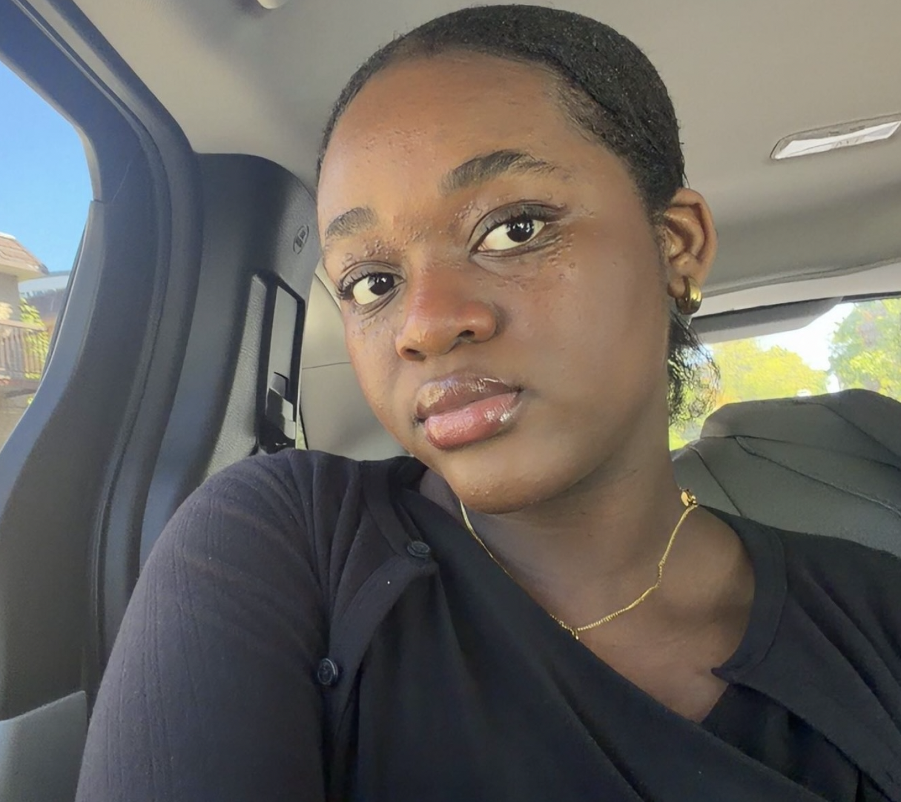

Like previously mentionned, I am currently a student entering her second year of studies. While I've known I wanted to code for a few years now, it had been difficult for me to get into the tech world. There are constantly new advancements and it's difficult and overwhelming to try to keep up, especially when you have AI on your side. My first year of college really showed me the amount research necessary to be succesful in the way I dream of. So here I am, coding with zero AI, no aid on VSCode, just learning with google and books, as I should've done from the beginning. It's harder but very rewarding.
My main goal for now is to grow my skills and my knowledge. I want to understand tech terms and keep up with the tech world. Make more of an effor to code projects and build my abilities. A few weeks ago, I knew nothing about HTML, and now, I've started building somthing pretty cool in my opinion. For me, growing that consistency is necessary if I hope to do something big.
In the future, I aim to build websites and applications that have a positive impact. While some may think that web development is a saturated field, I believe that there is still something to be done, as many of the websites and apps we see today fail to have a long term positive impact on society. I hope to create change, especially in African communities. Yes, these are big goals, but I believe they are reachable if my work follows.